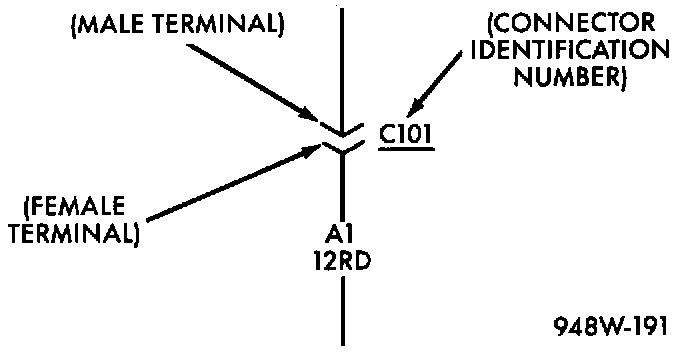

Connector Information
Connector Identification:

Connectors shown in the diagrams are identified using the international standard arrows for male and female terminals. A connector identifier is placed next to the arrows to indicate the connector number.
For viewing connector pin-outs, with two or more terminals, refer to Connector Pin-Outs Index, which identifies the connector by number and provides terminal numbering, circuit identification, wire colors, and functions.
All connectors are viewed from the terminal end unless otherwise specified. To find the connector location in the vehicle, refer to Connector Locations Index, which uses the connector identification number from the wiring diagrams to provide a figure number reference.